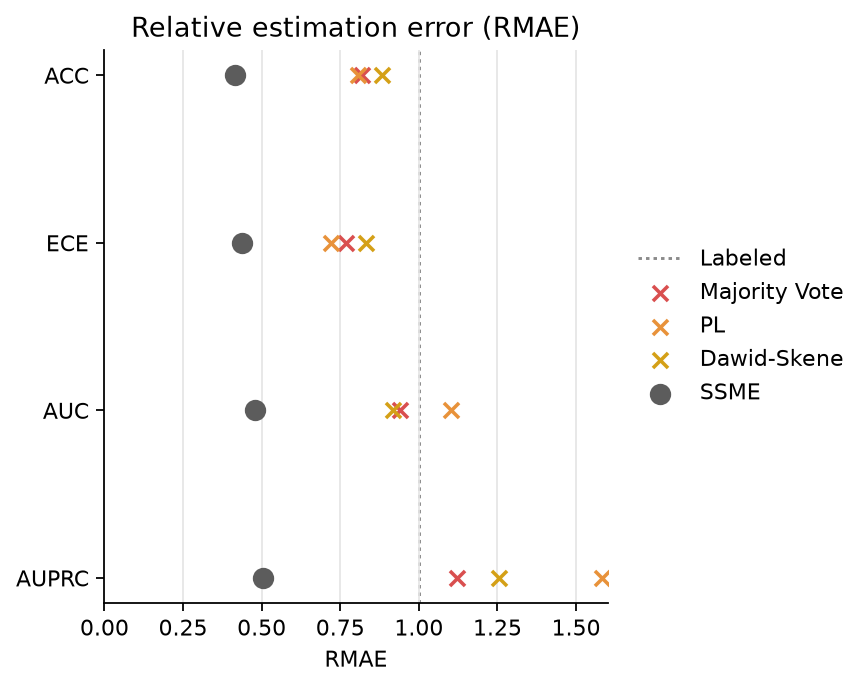
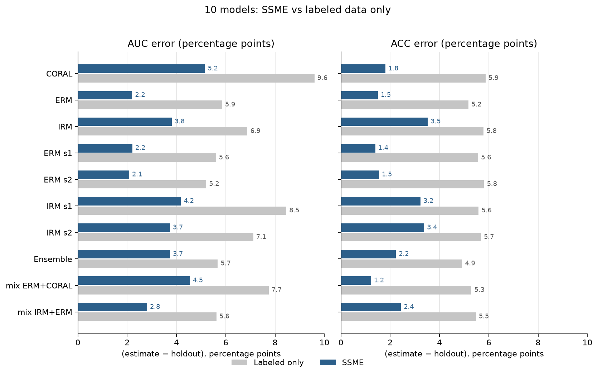

SSME-Lite results
These are the saved experiment pages. Each report is one HTML file and opens directly. On the GitHub file view, the same file is shown as source.
CivilComments
Fifty half-splits, 20 visible labels, and 1,000 unlabeled comments. SSME mean absolute error is 2.27, 2.12, 3.28, and 9.41 percentage points for Accuracy, ECE, AUC, and AUPRC.
Open the CivilComments report

PneumoniaMNIST
Seven released classifiers, estimated once with 20 visible labels and 400 unlabeled test images.
Open the PneumoniaMNIST report